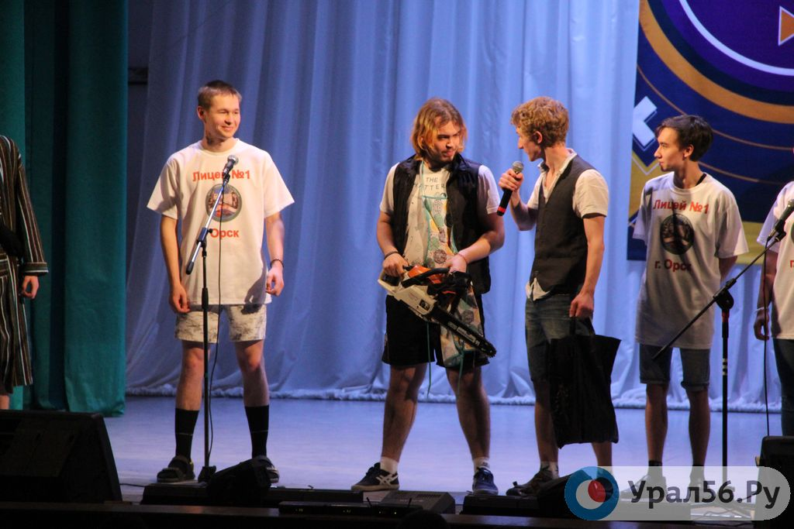
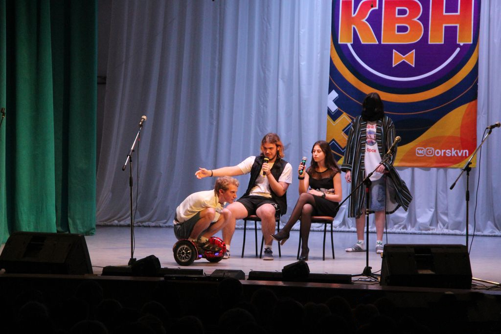
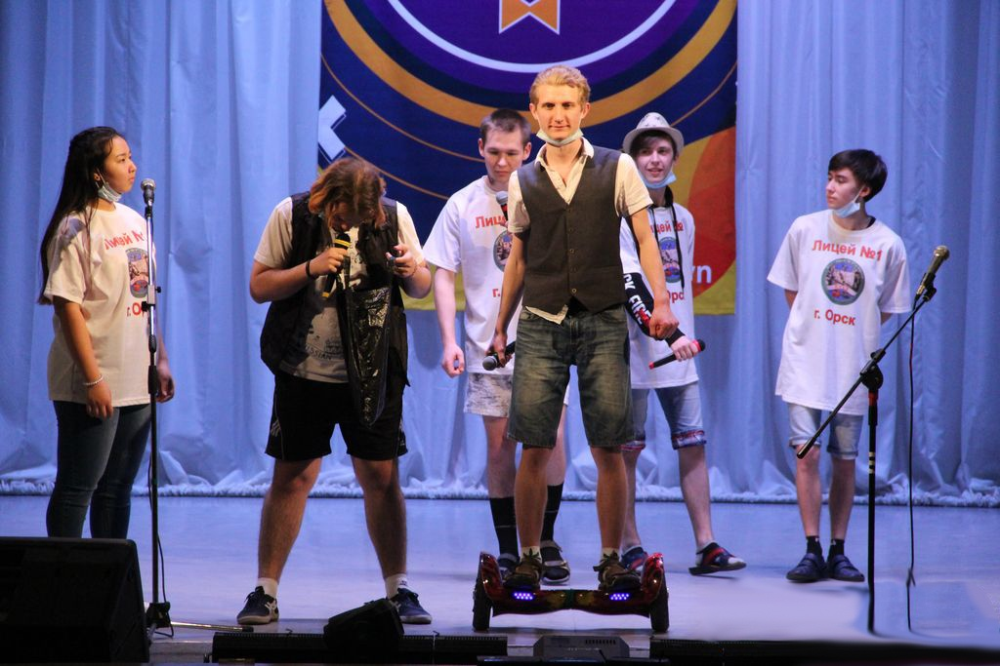
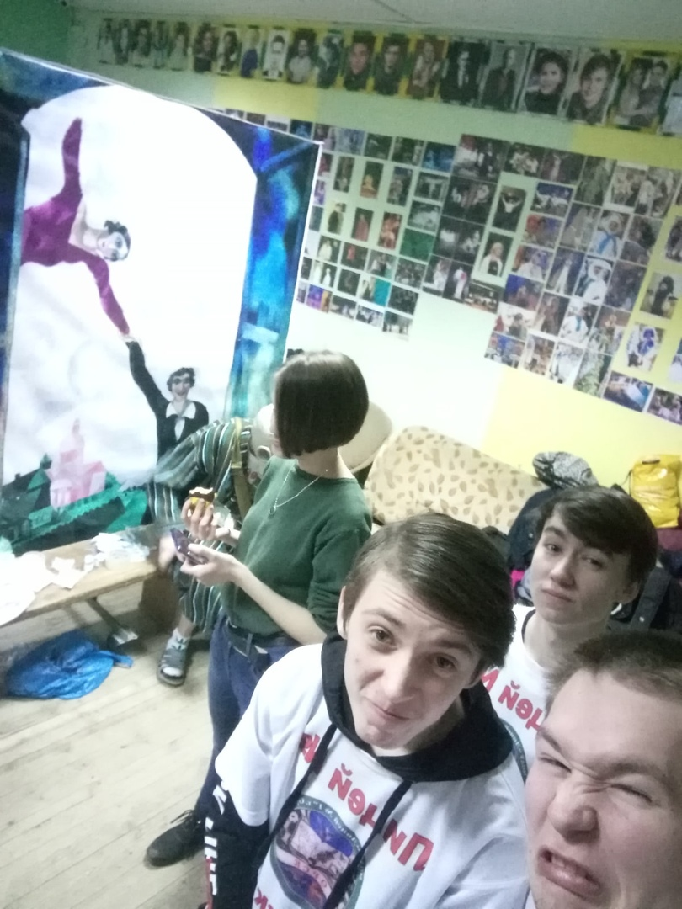
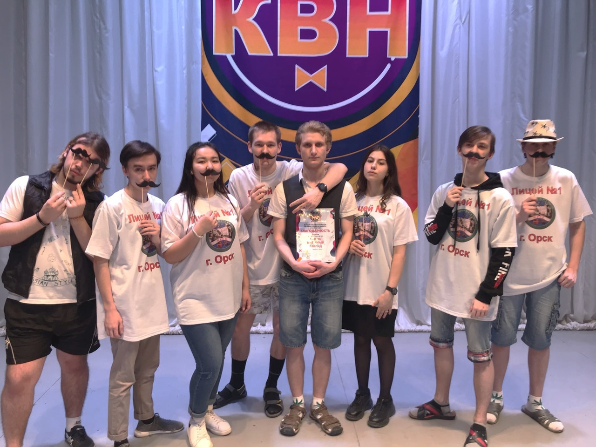

После нашего участия среди школ Орска в КВН прошло почти два года, прежде, чем мы окончательно решили подняться на ступень выше. Мы рискнули пойти в Орскую Лигу КВН. Был октябрь, когда мы решили это. Тогда-то мы почти единогласно выбрали себе тотемное животное, что сейчас является символом нашей команды, и тогда же выбрали эмблему, но об этом позже. Первые разы мы собирались в кафе и под чай весело обсуждали планы и идеи. Тогда все ещё казалось на уровне планов, потому что многие понимали, что все поменяется много раз. Так и получилось. Декабрь стал решающим для всей команды. Мы договорились с Лицеем № 1 о том, чтобы могли выступать на базе этого учебного заведения, а после мы даже получили свой собственный актовый зал, в котором стали собираться с третьего января этого года официально. А в конце декабря двое из нас, Леша и Глеб, пошли в финал предыдущего сезона игры КВН, после которого обратились к организаторам, что хотим участвовать. Там нам ответили, что надо ждать положения в их группе. Мы ждали полтора месяца, долго и весьма лениво что-то придумывали. А когда положение пришло, так сразу стало известно, что до сдачи осталось всего десять дней. Вот там и произошли самые критические изменения в команде. Выбыли два человека, те, с кем мы начинали свой путь за два года до этого. У них были свои интересы. В команде образовалась трещина, что дало свои результаты. У оставшихся упал моральный дух. Потому что ушли не просто люди, которые должны были выйти вместе с нами, а ушли те, кто начинал с нами, кто мечтал вместе с нами выйти ещё тогда, два года назад. Но после одиннадцатого класса у многих дороги разошлись. Брешь оказалась и в сценарии, который был готов к тому моменту, а до сдачи почти не оставалось времени. Тогда было принято решение, рискнуть, и позвать младших. Учеников того класса, которые сейчас заняли место за нами. Такие же активисты. Возраст девятого класса мог создать проблемы для серьёзной игры со взрослыми, но решили и рискнули. У них желание выйти было не меньше нашего. Мы шли к этой игре три года, а они сейчас с нами и планируют идти дальше. В этом сказывается наибольшая радость для тех, кто остался. Мы рискнули и не прогадали. Сейчас они часть нашей команды. Три новичка, готовых принимать плодотворное участие в игре. Все трудности были пройдены. Были и конфликты внутри команды. Каждый хотел предложить что-то свое. Тяжело было и в этом договориться. В день игры сбор был намечен за несколько часов до самой игры. Это было необходимо для того, чтобы все грамотно отработать. Тогда некоторые поправки были сделаны в ночь перед игрой, и часть сценария некоторые видели впервые. Был лишь завтрак, который нам предоставил кафе Фишка за свой счет. ( Связи.) Спасибо им за это. Но кому-то есть не хотелось вовсе. Питание было от адреналина. Каждый имел свой страх перед игрой. Кто-то боялся сцены, кто-то боялся забыть текст, кто-то боялся за реквизит, к слову, которого у нас было больше, чем у всех других команд. Но противники были сильные. Были лучше, были хуже. Я признаюсь, как капитан, для меня эта игра далеко не победа. Могли бы куда лучше. Но для меня победа – то, что мы вышли, не смотря на все трудности и лишения. Что мы оказались там, где планировали оказаться ещё пол года назад. Это реально победа. А отыграться мы ещё успеем. Главное – желание. А у команды оно есть. Самое трудно – начать. И мы начали. Также можно просмотреть более подробную информацию в нашей группе






